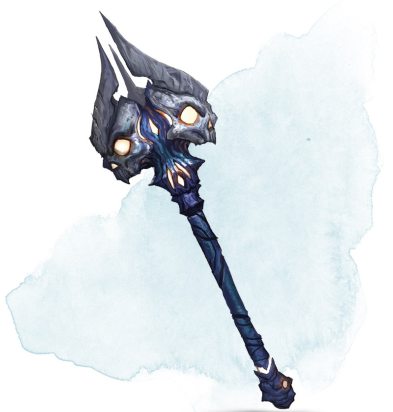

Mace of Terror
Weapon (mace), rare (requires attunement)
This magic weapon has 3 charges. While holding it, you can use an action and expend 1 charge to release a wave of terror. Each creature of your choice in a 30-foot radius extending from you must succeed on a DC 15 Wisdom saving throw or become frightened of you for 1 minute. While it is frightened in this way, a creature must spend its turns trying to move as far away from you as it can, and it can't willingly move to a space within 30 feet of you. It also can't take reactions. For its action, it can use only the Dash action or try to escape from an effect that prevents it from moving. If it has nowhere it can move, the creature can use the Dodge action. At the end of each of its turns, a creature can repeat the saving throw, ending the effect on itself on a success.
The mace regains 1d3 expended charges daily at dawn.
The mace regains 1d3 expended charges daily at dawn.
Dungeon Master´s Guide (SRD)
